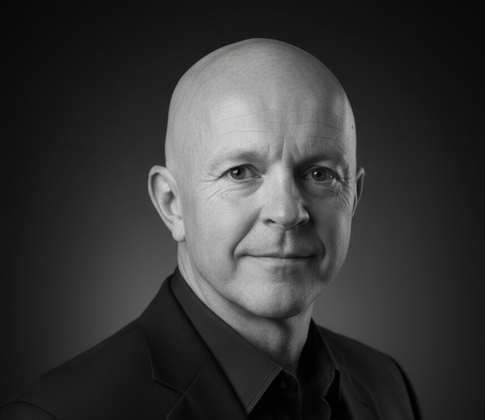
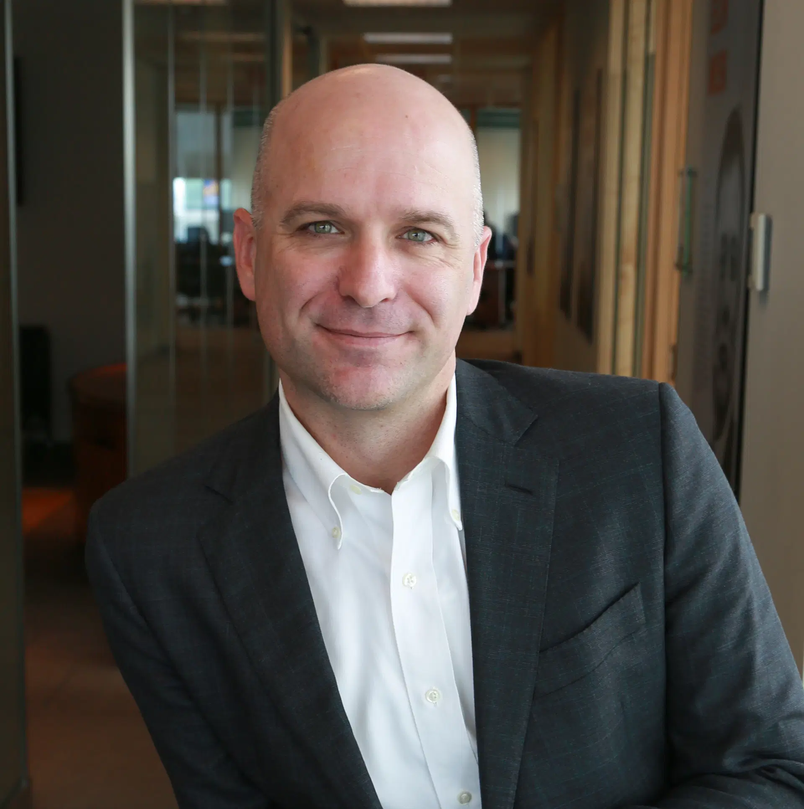

About
Experience built inside businesses
Tressling works with owners and executives of established businesses as they respond to AI-driven change. Our perspective comes from operating businesses, investing capital, structuring financing, and carrying change through with management teams.
Since its founding in 2003, Tressling has focused on the decisions and practical work involved in transformation and growth. Today, those fundamentals guide how we assess the opportunities AI creates.

Dan McLaughlin
Founder and CEO, Tressling.ai
Dan brings the combined perspective of an operator, investor, and advisor. As an owner and operator, he has scaled businesses in construction, real estate, and manufacturing. His experience includes growing a contracting business from 200 to 1,200 people in three years, managing the practical demands that expansion places on people and operations.
As Chief Investment Officer of SASCO Global Investments, Dan led investment decisions for a US$400 million fund. As an advisor, he has structured more than US$1 billion in debt and equity financing. He also held senior roles in restructuring at PwC and in international finance and restructuring at Bombardier Aerospace.
At Tressling, Dan works alongside ownership and management on business direction, operating performance, capital requirements, and the decisions that determine when and how to scale.
Founders and partners
Tressling.ai brings together Dan McLaughlin, Joel Massicotte, and Ivana Johnston. Our founding team combines operating leadership and capital expertise with technology implementation, market positioning, and commercial execution. We work alongside ownership and management to turn that combined experience into practical changes and business value.

Joel Massicotte
Technology strategy and implementation
Founder and Partner, Tressling.ai
Joel brings more than twenty years of engineering and digital transformation experience across telecom, automotive, financial technology, retail, and public services. His work includes connected-vehicle systems for Jaguar Land Rover, major cloud migrations, and bringing AI products into production.
At Tressling.ai, Joel contributes technology strategy, system architecture, integration, and AI product development. His approach combines technical delivery with the communication, trust, and team capabilities needed to use and maintain the systems being built.
Ivana Johnston
Positioning and go-to-market execution
Founder and Partner, Tressling.ai
Ivana is a brand strategist and business development leader specializing in marketing complex B2B technology, with deep experience in hospitality and travel. Her work connects positioning and messaging with the activities that build market awareness, generate demand, and develop commercial opportunities.
At Tressling.ai, Ivana contributes market positioning, go-to-market strategy, thought leadership, and marketing execution. She brings a practical understanding of how to explain a complex offer, reach the right customers, and support expansion into new markets.
Working alongside your team
We agree on the work and intended results with ownership and management, involve the people responsible for delivery, and review performance together. The aim is to build value in the business and the capability to sustain it.
Start a conversation
What comes next
for your business?
Let’s discuss the changes affecting your market, the opportunity you want to pursue, and the decisions ahead.